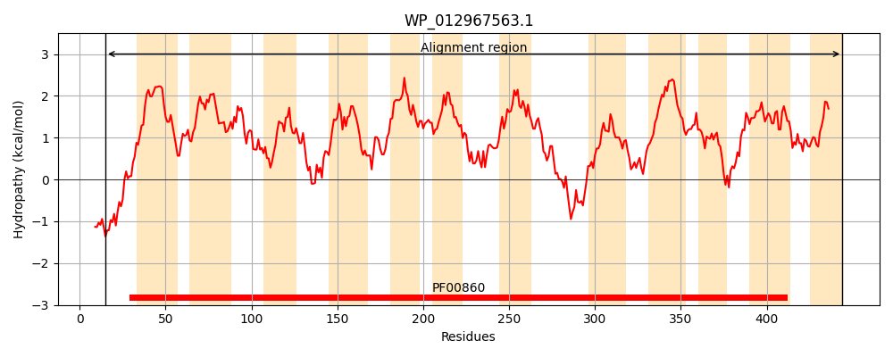
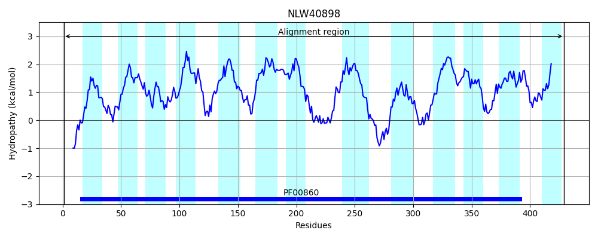
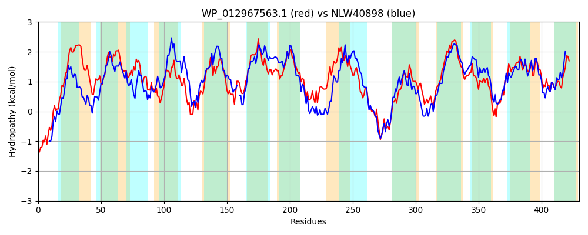

Hit Accession: NLW40898
Hit TCID: 2.A.40.7.8
Hit Description: gnl|BL_ORD_ID|6595 gnl|TC-DB|NLW40898.1|2.A.40.7.8 MAG: NCS2 family permease [Tissierellia bacterium]
Mach Len: 430
e:0.000000
Query TMS Count : 12
Hit TMS Count: 13
TMS-Overlap Score: 10.250000
Predicted Substrates:None
BLAST Alignment:
Score: 796 , Bit scores: 311 bits, E-value: 2.7e-102, Alignment length: 430, Percentage identity: 37
Query: 15 LERRFALRSRGGTLRTECLAGITGFLAAAYLLVVIPGLLAIGGMDKGAATTGTILVFVVGSLLMAFYANLPFIVGPGIGGSVLVGVTLAGSEGIGWQTGLGIACWSGILFFLLTRFGLREVVTRSVPQSIKLGLTASIGLFVAVLGFRNAGLVLANAKTNALMLGDFLAPGALVALCGLFLAIALQARKVPGAILWAILCATLVGIPFGVTHLPTSFIDVPHSLTPVLGQVDLLGALNIAFLPFLFVFFASEFFSTMGTTLAVGGEAGLLDEEGNMPQINRPFMVDSIAAALGPWVGIPAATALIESSAAAEAGGKTGLTALSAAVMFLLMLLFTPVALMIPKEATAPALILIGLNMFSGLRKVDLGNFTDGLPVLMMVMITLIANSFGTGIAGGLLFYIVIKAIAGKWREIPIGLWVLAVPLVYYFATL 444
+ERRF L G RTE LAGIT F+ AY+L+V PG+L+ GMD G T T L + +LLM AN PF + PG+G + T+ WQ L GI+F +L+ F +RE + ++P ++K ++ IGLF+A++GF NAG+V T L LG+ ++ G ++A+ GL + L A+ V GA+L I+ T++GIP G+T +P +P S+ V Q + + L LF F + F T+GT + V +A +LDE+G +P++ + D++ +G +G T +ES++ GG+TGLTA+S AVMFLL L F+P+ +IP +ATAPALI++GL M S ++++DLG+FT+ +P + +++ A S GI G++ Y+V+K I GK ++I + +++LA + + L
Sbjct: 1 MERRFKLSQNGTDARTEILAGITTFMTMAYILMVNPGMLSETGMDWGGVFTATALSAAIATLLMGLLANYPFALAPGMGLNAFFTYTVVFGMSKSWQFALTAVFLEGIIFIILSLFQVREAIFNAIPMNLKKAVSVGIGLFIALIGFVNAGIVETGDGT-ILGLGNIVSRGPILAIIGLIIMGVLLAKNVKGALLIGIILTTIIGIPMGITPMPEGVFRLPPSVRDVAFQFEWSNIFTMDMLIVLFTFLFVDVFDTVGTLVGVASKADMLDEKGQLPKVREALLSDAVGTVVGACLGTSTVTTYVESASGVADGGRTGLTAVSTAVMFLLALFFSPLFAIIPSQATAPALIIVGLFMMSPIKEIDLGDFTEAIPAFLTIVMMPFAYSIAEGIVFGMISYVVLKLITGKHKDISVIMYILAALFILKYIFL 429 | Protein Hydropathy Plots: |
|---|
|  |  |
Pairwise Alignment-Hydropathy Plot:
|
|---|
|  |